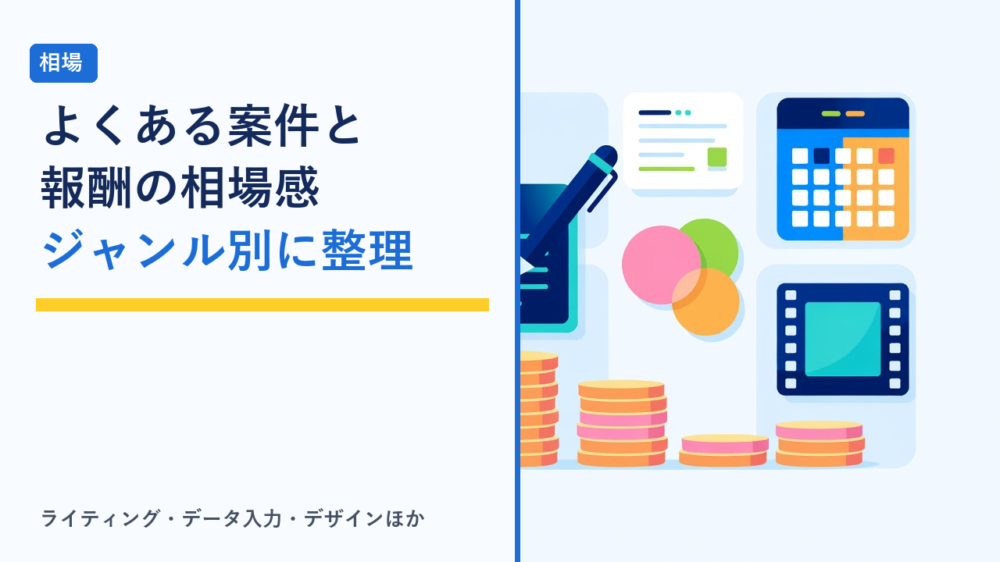
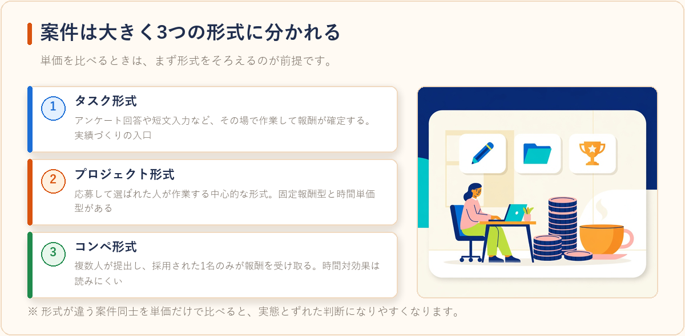
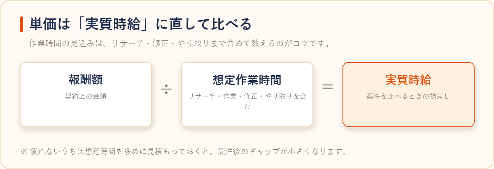

クラウドソーシングでよくある案件ジャンルとその相場感まとめ
2026-08-08 更新

クラウドソーシングを始めるとき、多くの人が最初に迷うのが「自分に何ができて、それがいくらになるのか」という点です。募集されている案件は幅が広く、数十円で終わる作業から、月額で継続契約する仕事まで同じプラットフォーム上に並んでいます。この記事では、クラウドソーシングで募集の多い案件ジャンルを整理し、単価がどう決まるのか、相場感をどう見積もればいいのかを客観的にまとめます。
まず押さえたい：案件は大きく3つの形式に分かれる
- タスク形式：アンケート回答や短文入力など、応募や選考なしでその場で作業して報酬が確定する形式。1件あたりの単価は低めですが、実績づくりの入口として使われます。
- プロジェクト形式：発注者に応募し、選ばれた人が作業する形式。固定報酬型（1件いくら）と時間単価型（1時間いくら）があり、クラウドソーシングの中心的な形式です。
- コンペ形式：ロゴやネーミングなど、複数人が成果物を提出して採用された1名のみが報酬を受け取る形式。採用されなければ報酬はゼロになるため、時間対効果は読みにくくなります。
同じジャンルでも、この形式の違いによって受け取れる金額と拘束時間は大きく変わります。「単価が高い／低い」を比べるときは、形式をそろえて比較することが前提になります。

よくある案件ジャンルと単価の傾向
下表は、クラウドソーシング各社が公開している募集カテゴリや一般的な募集内容から読み取れる傾向を整理したものです。実際の金額は発注者・案件の難易度・実績によって大きく変動するため、あくまで見積もりの出発点として扱ってください。
| ジャンル | 仕事の内容 | 単価の傾向・見方 |
|---|---|---|
| データ入力・リスト作成 | 名簿や商品情報の転記、表計算ソフトへの入力 | 1件・1行あたりの単価が小さく、作業スピードがそのまま時給に直結する。未経験でも入りやすい反面、単価は上がりにくい |
| アンケート・モニター | 設問への回答、商品の感想投稿 | タスク形式が中心で1件あたりは少額。すきま時間向けで、まとまった収入にはなりにくい |
| Webライティング | 記事作成、商品説明文、体験談の執筆 | 「文字単価×文字数」で提示されることが多い。専門知識や資格が必要なジャンルほど単価が上がりやすい |
| 文字起こし・テープ起こし | 音声・動画の文字化 | 録音時間（分）あたりで提示されることが多い。音質や話者数で実作業時間が変わる点に注意 |
| デザイン（ロゴ・バナー） | ロゴ制作、広告バナー、サムネイル作成 | 1点あたりの固定報酬。コンペ形式も多く、採用されなければ報酬が発生しない案件がある |
| 動画編集 | カット、テロップ入れ、BGM挿入 | 1本あたりの固定報酬。尺と修正回数で実質時給が大きく変わるため、条件の確認が重要 |
| プログラミング・開発 | サイト制作、システム改修、保守 | 案件規模が大きく単価も高めだが、要件定義や納品後対応まで含めた工数で見る必要がある |
| 事務代行・オンラインアシスタント | メール対応、日程調整、資料作成などの継続業務 | 時間単価または月額の継続契約が中心。安定しやすい一方、稼働時間の確保が前提になる |
単価は「1件いくら」ではなく「実質時給」で見る
クラウドソーシングで収入を見積もるときに最も誤差が出やすいのが、作業時間の見込みです。たとえば同じ報酬額の記事作成案件でも、リサーチが必要なジャンルとそうでないジャンルでは所要時間が数倍違うことがあります。動画編集やデザインも、修正対応の回数が事前に決まっていないと、想定より作業が伸びることがあります。

そのため、案件を比べるときは「報酬額 ÷ 想定作業時間（リサーチ・修正・やり取りを含む）」で実質時給を出してみるのが分かりやすい方法です。慣れないうちは想定時間を多めに見積もっておくと、受注後のギャップが小さくなります。
手数料と振込手数料を差し引いて考える
クラウドソーシングでは、報酬から運営側のシステム手数料が差し引かれるのが一般的です。手数料率はサービスや報酬額の帯によって異なり、さらに報酬を口座へ出金する際の振込手数料がかかる場合もあります。表示金額がそのまま手取りになるわけではないため、実際の受取額を基準に判断しましょう。出金のタイミングをまとめて手数料の発生回数を減らす、といった工夫も有効です。
サービスごとの手数料の考え方や特徴は、在宅ワーク・クラウドソーシングサービス比較で整理しています。
登録から案件応募までの具体的な流れは、クラウディアの始め方：登録から案件応募までの流れにまとめています。
選び方のポイント
- 最初は形式を絞って経験を積む：ジャンルをいくつも並行するより、まずタスク形式やプロジェクト形式の小さめの案件で評価・実績を作るほうが、次の応募が通りやすくなります。
- 募集要項に作業範囲が書かれているか確認する：修正回数、納品形式、連絡手段、納期が明記されている案件は、後からの追加作業が起きにくい傾向があります。
- 継続案件かスポット案件かを見分ける：単価が同程度なら、毎回応募し直す必要のない継続案件のほうが、応募にかかる時間を減らせます。
- 自分のスキルが「時間短縮」に効くジャンルを選ぶ：単価の高さより、同じ時間で多くこなせるジャンルのほうが実質時給は上がります。得意な作業を軸にするのが結果的に近道です。
- プラットフォーム外の直接取引を持ちかけられたら慎重に：多くのサービスで規約上禁止されており、報酬の保証（仮払い制度など）の対象外になるリスクがあります。
見落としやすい注意点
報酬が一定額を超えると、確定申告や住民税申告が必要になる場合があります。会社員が副業として行う場合と、専業で行う場合とで基準が異なるため、収入が増えてきたら早めに確認しておきましょう。契約形態や税金の基礎は在宅ワークで注意したいこと：契約・報酬・確定申告の基礎知識まとめで解説しています。また、案件によっては著作権の譲渡や秘密保持に関する条件が含まれます。納品物を実績として公開できるかどうかも、応募前に確認しておきたい項目です。
よくある質問
未経験でも受けられるジャンルはどれですか？
データ入力、アンケート回答、簡単な文字起こしなどは、特別な資格がなくても応募できる案件が比較的多いジャンルです。単価は高くありませんが、評価と実績を積むことで、より条件のよい案件に応募しやすくなります。
相場より安い案件は避けたほうがいいですか？
一概には言えません。実績がない段階では、単価より「継続して依頼してもらえるか」「作業内容が明確か」を重視したほうが、結果的に効率よく経験を積めることがあります。ただし、作業範囲が曖昧なまま極端に安い案件は、実質時給が大きく下がりやすいため注意が必要です。
複数のサービスに同時登録してもいいですか？
多くのサービスは併用を禁止していません。案件の傾向や手数料はサービスごとに異なるため、いくつか登録して募集内容を比較してから、主に使うサービスを決める人もいます。ただし、同じ案件を重複して受注しないよう、納期の管理には注意しましょう。